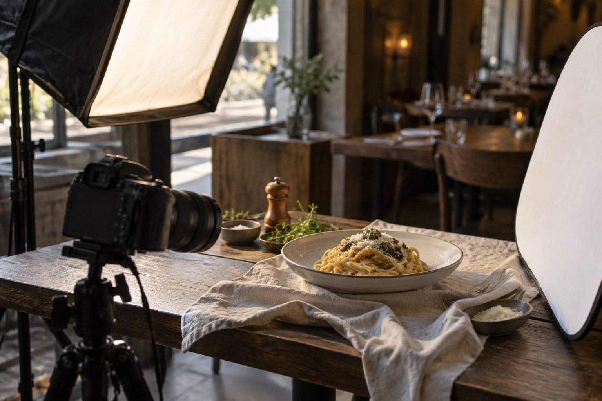
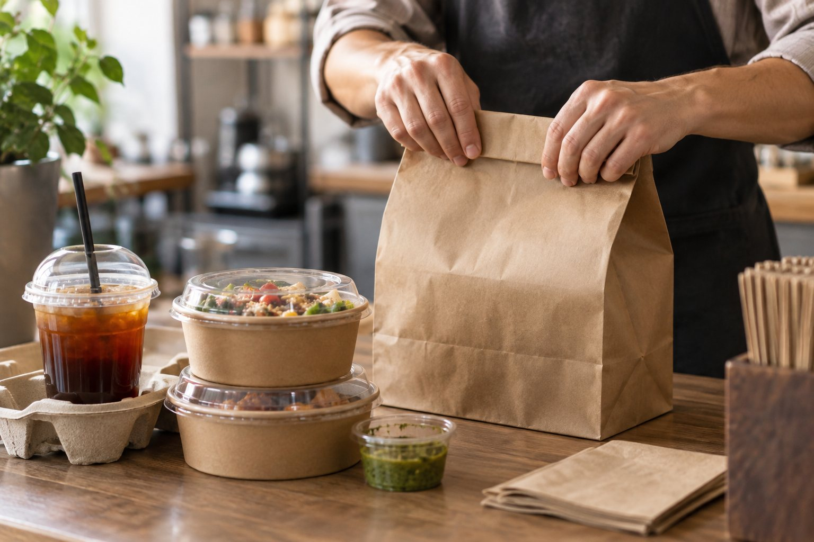

Guides
Free guides to a better Uber Eats page.
Practical, honest advice for independent restaurants, cafés and bakeries. Use it yourself, or let us do it for you.
Practical, honest advice for independent restaurants, cafés and bakeries. Use it yourself, or let us do it for you.

Practical ways independent restaurants and cafés can make their Uber Eats page more appetising and easier to order from: photos, names, descriptions, categories and more.

A simple formula and menu description examples for Uber Eats: burgers, curries, pizza, coffee and Aussie takeaway favourites like the parmi, HSP, fish and chips and meat pies.

Uber Eats photo requirements for restaurants: 5:4 ratio, 2880 × 2304 pixels, JPG under 10 MB, one item per photo, and the most common reasons photos get rejected.

Simple tips for restaurant owners to take bright, appetising Uber Eats food photos with a phone: light, angle, background, framing and editing.

A step by step guide for restaurant owners on updating item names, descriptions, photos and categories in Uber Eats Manager, plus how to add someone to help.

Just launched on Uber Eats? A practical checklist for new restaurants and cafés to make a strong first impression: menu, photos, banner, hours and more.

A practical, honest guide for restaurants and cafés on setting Uber Eats prices: costs, commission, packaging, combos, sizes and promotions.

On more than one delivery app? Practical menu tips for Uber Eats, DoorDash and Menulog: what's the same, what differs, and how to keep every menu up to date.

How restaurants and cafés can choose and take a banner photo for their Uber Eats page: which dish to show, how to shoot it, cropping and common mistakes.

A practical guide to Uber Eats menu categories for restaurants and cafés: how many to have, what to call them, what order to put them in, and what to remove.

How restaurants and cafés can reply to Uber Eats reviews and feedback: what to say to good and bad reviews, examples you can adapt, and what to fix on your menu.

Uber Eats fees for restaurants in Australia in 2026, and how much Uber Eats charges restaurants: 30% delivery, 16% self delivery, 8% pickup, the A$700 activation fee, Webshop rates and how to work out what you keep.

What Uber Eats food photography costs for restaurants: hiring a photographer, Uber's own photography session for restaurants, or enhancing photos from your phone.

Restaurant owners: why your Uber Eats photo won't upload or gets rejected, and how to fix each problem: file size, format, photo size, shape, text and logos.

Moving your restaurant from Menulog to Uber Eats? What Uber asks for when you sign up, its photo and cover image rules, and how to set up a new Uber Eats page that people choose.

How Australian restaurants and cafés join Uber Eats: the sign up steps, what you need, the A$700 activation fee, and a checklist for your first week.

Step by step for restaurant owners: how to add or replace menu photos in Uber Eats Manager, Uber's photo rules, and what to do if a photo won't upload.

For restaurant owners: practical ways to improve your Uber Eats rating. Accurate photos and descriptions, packaging, sold out items and reading your feedback. No promises, just the parts you control.

30 before and after Uber Eats menu description examples by cuisine: burgers, pizza, Indian, Thai, Chinese, kebab, café, bakery, dessert and healthy bowls. Each one 140 to 260 characters.

How restaurants and cafés should order Uber Eats categories and items so best sellers come first: a Most Popular category, the right category order, and the best item at the top of each.

The five ways to optimise a restaurant's Uber Eats page compared: Uber Eats Manager, free checkers, restaurant software, food photographers and makeover services. Costs, who does the work and what each one fixes.

How restaurants dispute Uber Eats error charges and refunds in Uber Eats Manager: where to find them, the 30 day limit, what proof to add, and how to stop them happening.

Uber Eats now improves food photos with AI and can show customer photos on dishes that have none. What that means for your restaurant, and why photos of your real food still win.

A simple monthly checklist to manage your restaurant's Uber Eats account: reviews, refunds and error charges, offers and ads, menu and photos. Do it yourself, or let MenuFix do it for you.

How restaurants and cafés set up their Google Business Profile to bring customers: categories, hours, menu, real food photos, the order button and replies to reviews.
Simple checks that run in your browser. Nothing you add is uploaded or saved.
Check a dish photo against Uber's size rules and fix the shape in one click.
Open the tool →Paste a dish description: length, capitals, vague words and missing ingredients.
Open the tool →Answer 10 quick questions about your page and get your score and your 3 most important fixes now.
Open the tool →Tell us your restaurant, café or bakery on Uber Eats. We'll send you a free mockup of how your page could look. No payment, no obligation.